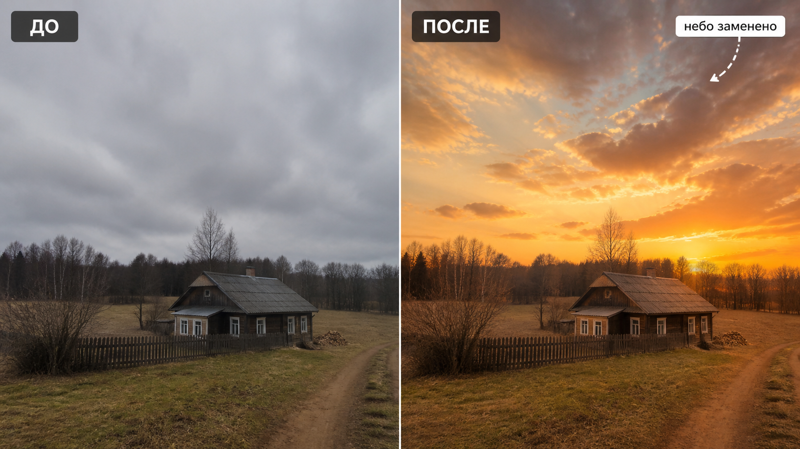

Промтзилла
Замена неба работает лучше всего, когда ИИ понимает, что менять нужно только верхнюю часть кадра, а свет на земле должен остаться правдоподобным.

Пошаговая инструкция
- 1Выбери фото с понятной линией горизонта и без сложных волос, веток или прозрачных объектов на фоне неба.
- 2Загрузи кадр в инструмент редактирования фото онлайн.
- 3Опиши, какое небо нужно: закат, ясный день, драматичные облака или мягкая облачность.
- 4Попроси ИИ согласовать свет, цвет и отражения с новым небом.
- 5Проверь края деревьев, крыш, воды и стекла.
Пример результата
На обложке показан сценарий до/после: исходное фото и результат, который можно получить через инструмент редактирования фото онлайн.
Промт
RU
Замени небо на фотографии на [опиши новое небо: закат, ясное голубое, драматичные облака, рассвет]. Важно: — меняй только небо и связанные с ним отражения; — сохрани ландшафт, здания, людей, деревья и все объекты без изменения формы; — аккуратно обработай края крыш, веток, волос, воды и стекла; — согласуй цветовую температуру, направление света и тени с новым небом; — не делай результат слишком насыщенным или фантазийным, если я не просил этого. Финальный кадр должен выглядеть как реальная фотография, снятая в этот момент.
EN
Replace the sky in the photo with [describe the new sky: sunset, clear blue, dramatic clouds, sunrise]. Important: — change only the sky and related reflections; — keep landscape, buildings, people, trees, and all objects unchanged in shape; — carefully handle edges of roofs, branches, hair, water, and glass; — match color temperature, light direction, and shadows to the new sky; — do not make the result too saturated or fantasy-like unless requested. The final image should look like a real photograph taken at that moment.
Важно
Самая частая ошибка при замене неба — красивое небо не совпадает со светом на земле. Проверяй тени, отражения и цвет лиц, зданий и воды.
Теги